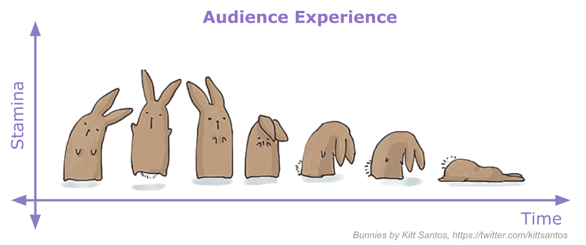

Tutorial Presentation#
This section will focus on the practicalities of live presentation of technical tutorial content. Getting up in front of an audience and teaching is scary and hard, even for those who appear to be confident and experienced teachers! Though we outline tips in this section for being a more effective tutorial instructor, the practice never stops being a learning process that is highly personalized to you. We encourage to use this section to form your own set of goals around how you want to teach, and use your time as a tutorial lead to get hands on practice towards those goals (rather than a binary sense of achieving them/not achieving them).
Practice, practice, practice#
Prepare your tutorials well in advance and practice it in front of a small audience for feedback. This helps ensure you have enough time to cover your full tutorial, can be an opportunity for feedback, and will give you confidence when presenting during the hackweek.
Approachable lecturing#
Synchronous tutorial delivery often involves a lot of “lecturing” – that is, speaking in an authoritative way in front of an audience. Lecturing is a necessary teaching tool, but it’s difficult do it engangingly and paced well for an audience of mixed experience levels. Further, too much lecture can strain the audience’s attention (a common problem in hackweek settings!).
{kind=link}
One of the best ways to mitigate lecture strain is to make room for interactivity in what is a commonly one-sided learning modality. This is a common goal (enthusiastically asking our audience to “ask me questions!!”), but can be difficult to achieve. Here are some tips:
Clarification pauses: Even when not explicitly asking the audience for questions, leave short pauses in the middle of your explanations and at the end of sentences. This gives audience members the chance to ask questions without feeling like they’re interrupting you.
Slowing your pace: Monitor your speaking speed and slow down a little more than you would in normal conversational speech. Emphasize the same point multiple times. Explain things in multiple ways. This gives the audience an opportunity to process what you’re saying and determine if they have questions, without worrying about getting lost as you move on.
Lowering barriers to entry: Use tools like Slack chat, Padlet or Particify to allow the audience to engage with you without having to speak up in front of the room. Allow anonymous messages. These strategies help shy folks feel able to engage, and break the ice for further audience interaction that doesn’t need such assistive technology
Allow awkward silence: When stopping to ask for questions or a voluntary responses to a prompt, wait until someone answers. Don’t move on if it’s just silent. Often times, the “stupid” questions someone decided not to ask are actually great discussion points, and they’ll ask them with enough prompting.
Proctoring Activities#
When starting activities within a tutorial, participants will have to shift gears from “listening” mode to “doing” mode. This shift takes both time and energy on their part, but a few practices from the tutorial lead can help reduce their toll:
Maintain continuity of materials: Make relevant reference material easily accessible. Make sure activity instructions are written out and available to participants, and in those instructions remind students where to find the relevant lesson content that the activity is based around.
Start concretely: Spell out the activity as much as possible before breaking from lecture mode, while you still have the audience’s attention. Clearly identify what their first steps are when they sit down to work. If folks will be put into discussion groups, give as concrete a structure for that discussion as you can.
Give the activity “breathing room”: Leave more time for the activity to run than you personally feel is necessary; because the audience will need to gear-shift and process the activity’s instructions, they’ll appreciate the time.
Clearly indicate return time: Before starting, clearly state what time the activity will be over and you’ll move on to the next content. Use absolute clock times, not relative amounts like
in 5 minutes. This allows participants to self-time during the activity. It also helps you: as the activity goes on, you may worry that people are bored or you left too much time for the work provided. That’s fine; even if it’s true, folks will appreciate the break. Regardless, you’ve made a verbal contract with the audience about how long they have and have to honor it.
Examples of presenting#
Take a bit of time to review these excellent tutorials recorded at our previous hackweeks: